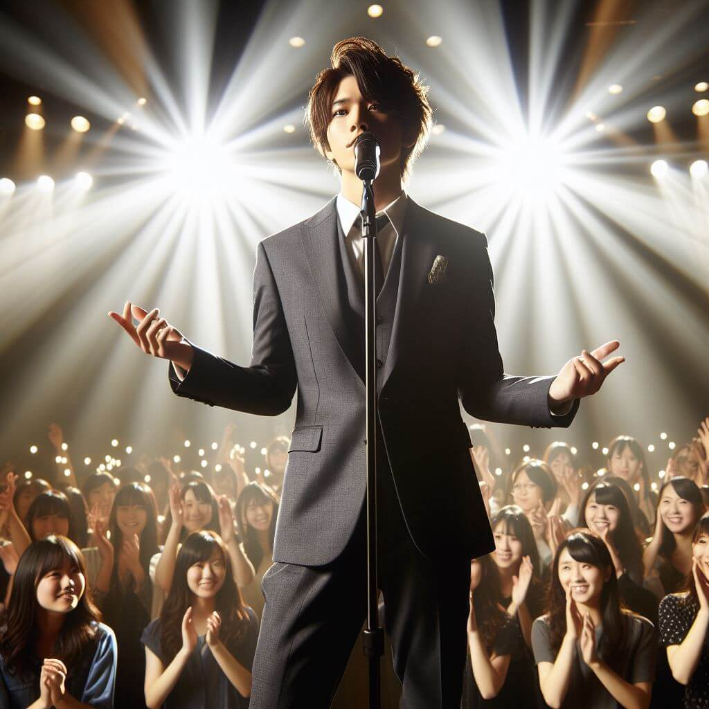
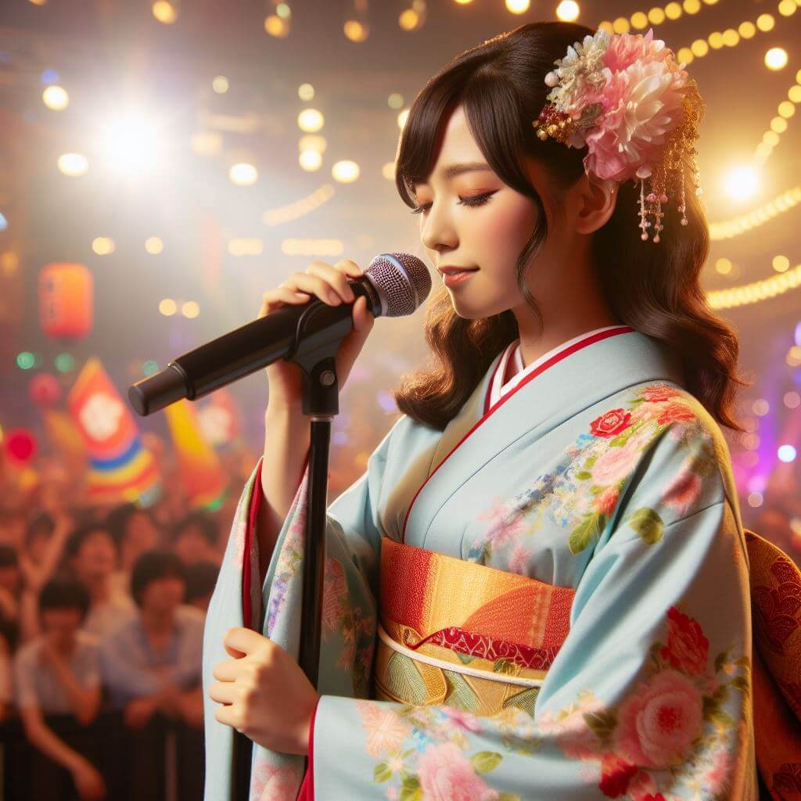
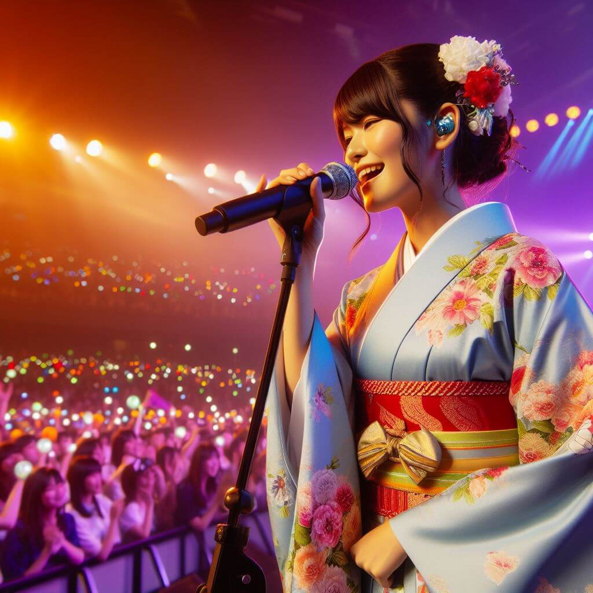
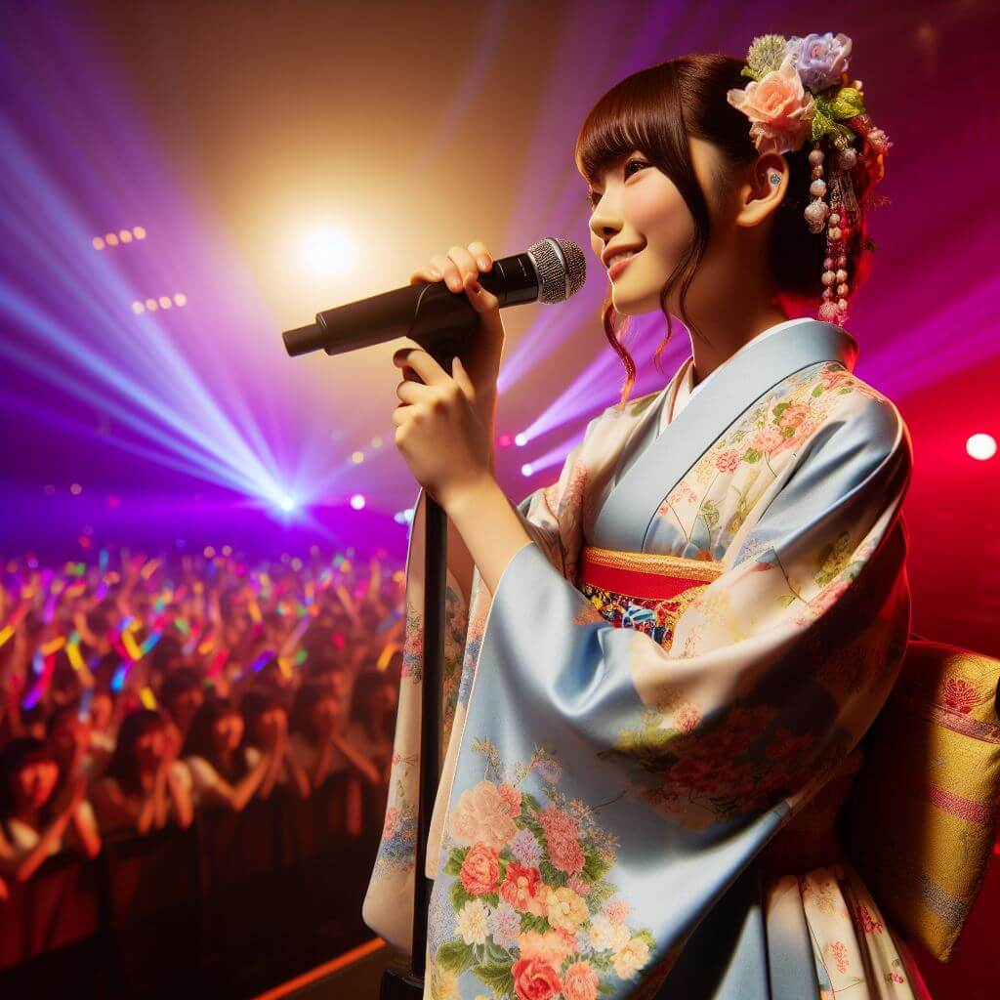
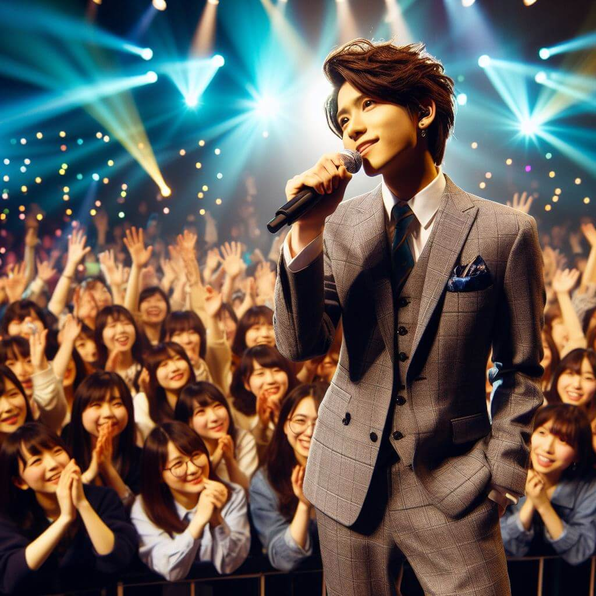
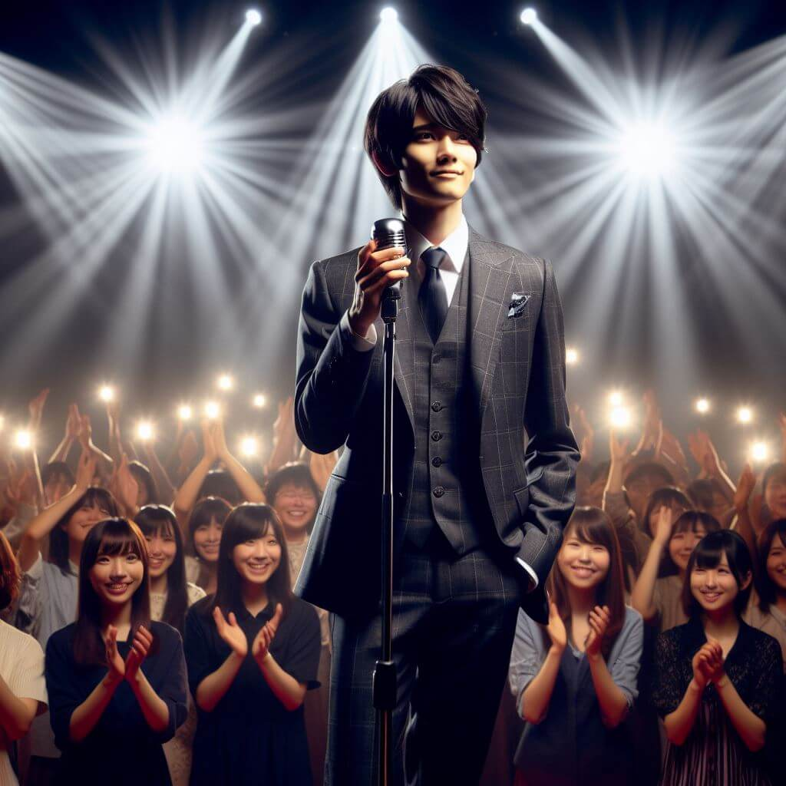

Actividades
| sponsor | artista | horario |
|---|---|---|
|  |
Utagawa Kuniyoshi Pop |
20:30 |
|
Katsushika Hokusai Jpop |
21:00 | |
|  |
Yoshitomo Nara Kpop |
22:45 |
|  |
Osamu Tezuka Reggae |
00:00 |
| sponsor | artista | horario |
|---|---|---|
 |
Katsushika Hokusai Cumbia |
20:30 |
|  |
Yayoi Kusama Electro |
21:00 |
|  |
Hiroshi Yoshida Rap |
22:45 |
|  |
Hayao Miyazaki Salsa |
00:00 |